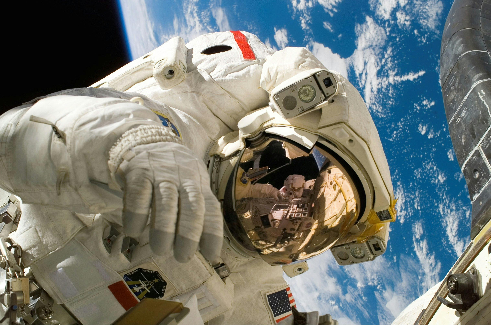

An astronaut is a person trained to pilot a spacecraft, travel in a spacecraft or work in space.
From the window of the ISS, the surface of the Earth looms large. Indeed, in the daytime, you can clearly see major landforms. Subsequently, at night, from Earth orbit, you see the lights of Earth's cities.
The system of automatic and manual docking and maneuvering of the type used on spacecrafts “Cosmos-186”-“Cosmos-188”, “Cosmos-212”-“Cosmos-213”, “Soyuz-2”-“Soyuz-3” and “Soyuz-4”-“Soyuz-5” is considered. The equations of the motion, the laws of control and the system block diagram are presented. The effect of parallaxes at short relative distances is studied in detail.

NASA's SLS (Space Launch System) is a super heavy-lift rocket that provides the foundation for human exploration beyond Earth orbit. With its unprecedented capabilities, SLS is the only rocket that can send the Orion spacecraft, four astronauts, and large cargo directly to the Moon on a single mission.
UPDATED MAR 7, 2023

Apollo 11 (July 16-24, 1969) was the American spaceflight that first landed humans on the Moon. Commander Neil Armstrong and Lunar Module Pilot Buzz Aldrin landed the Apollo Lunar Module Eagle on July 20, 1969, at 20:17 UTC, and Armstrong became the first person to step onto the Moon's surface six hours and 39 minutes later, on July 21 at 02:56 UTC.
From Wikipedia, the free encyclopedia